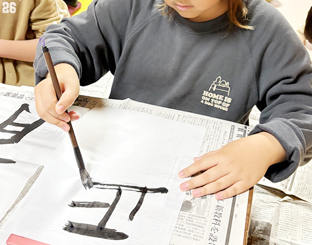

TOP ＞放課後等デイサービス
お子さま自身の「学びたい・成長したい」という意欲を最大限に引き出すことを第一に考え、「強制学習」ではなく「楽しい遊び」であること、「嫌なことをする」ではなく「楽しいからやりたい」と思えること、そしてお子さまの瞳が輝くような「療育」を通じ、自発的に取り組み能力を発揮するお子さまの姿をサポートします。
問題行動によって一番困っているのは子ども自身かもしれません。
大切なのは、子どもの行動を認めて褒めて自己肯定感を育てることです。
常にできていることを認め、子どもの興味や意欲を生かすことが大切です。
その子どもの行動を認め、自発的学習行動を増加させることを目指しているのです。
適切な行動へ繋がるスモールステップを設定し、出来たことを認め、出来なくても否定せず、どうすれば自発的な行動へ繋がるのかを常に考えながら接します。
そして、適切な行動がなかなかできない場面では、待つことを大切に子どもが落ち着くことができるようサポートします。
